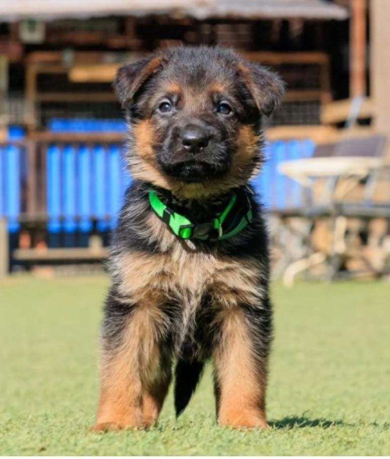
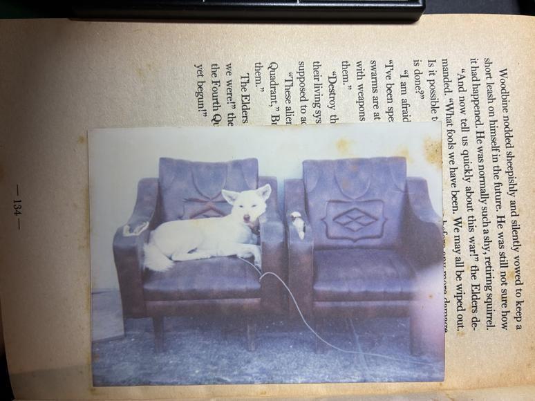
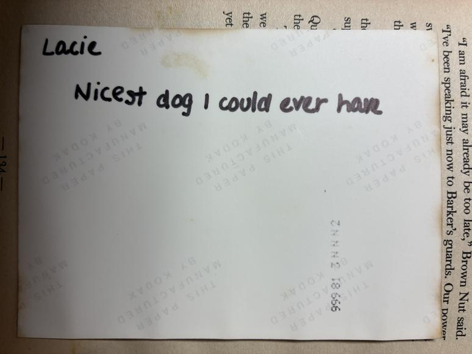

うるがいの話 ある日
最新: ポチ【うるがいの話 ある日】とは 一日だけのプログです
『うるがいの話』の最新一日だけのプログで、通信料が少なく経済的だ。カニの画像をクリックすると全ての日付が載る『うるがいの話』サイトを表示します
|
|
【うるがいの話】 うるがい(ｳﾙｶﾞｲ urugai)とは、『もずくがに』の名前でとても大きくなります。 |
|---|---|
|
|
【カミマヤーの話】 猫のことを方言でマヤーといいます。カミマヤー（kamimayaa）とは、神の猫のことです。 |
|
【たながぁの音楽】 たながぁ（ﾀﾅｶﾞｰ tanagaa）とは手長えびのことで、何種類かあり大きいのは車 エビぐらいになります。 |

|
【ぶながぁの話】 ぶながぁ(ﾌﾞﾅｶﾞｰ bunagaa)とは、赤い髪の毛、赤い身体、そして身長は１ｍ２０ｃｍ ぐらい、川の蟹を食べているの目撃された。場所は沖縄県国頭郡大宜味村のと ある村僕の隣近所に住んでいる爺さんから、聞いた話です。 |
|
|
【ギーマの話】 ギーマ(giima)とは、山原の里山に咲くスズランに似た、 花を付けます。実は食べられます、 気が付くと口の周りが紫になっています。 |
2026年07月02日 (木）ポチ
15:01
クマゼミの鳴き声が、部屋の外から五月蠅いです（補聴器を付け
たからでしょうか）。突如として今日から、ハッキリと。
ポチとは、私が小学生の頃飼っていたシェパード（メス）の子犬
の名前で、写真はイメージです。

あるとき、学校から帰ってきたらいませんでした。母親に尋ねる
と、父親が知人に譲ったと。それから、暫くたって奥間ビーチの
手前にある民家で、成人になったポチを見ました（近づくことは
しませんでしたが）。古本屋（２００円）から、買った本を読ん
でいると突如写真が、出てきました。

>写真の裏には、メモがありました。

>購入した古書に犬の写真が挟まれていました。どうすればいい
>でしょうか
それは少し驚きますね。
購入した古書に犬の写真が挟まれていた場合は、次のような対応
が一般的です。
１.そのまま記念に保管する。
古書には前の持ち主のしおりやメモ、写真などが残っているこ
とがありそれも古書ならではの「出会い」と考える人もいます。
２.本とは別に保管する。
写真が大切そうに見える場合は、本に挟んだままではなく封筒
などに入れて保管すると傷みにくくなります。
３.古書店に連絡する。
写真が家族写真のようなもので、持ち主にとって大切なものと
思われる場合は、購入した古書店に「写真が挟まっていました
」と伝えてみるのもよいでしょう。前の持ち主から問い合わせ
があれば返却できる可能性があります。
もし特に連絡先などが分からず、古書店でも対応しない場合は
、無理に持ち主を探そうとする必要はありません。
ちなみに、その犬の写真は
犬だけが写っていますか？・・・・・
>犬だけです、写真の裏にLacie Nicest dog I could ever have
と書いてます
そのメッセージには、ちょっと心を打たれますね。
日本語では
「レイシー。今まで飼った中で一番すばらしい犬。」
または
「レイシーは、私にとって最高の犬だった。」
という意味になります。
つまり、この写真は前の持ち主にとって、とても大切な愛犬の思
い出だった可能性があります。
そのような写真が偶然古書に挟まっていたのは不思議な縁ですね。
私でしたら、
写真をきれいな封筒に入れて大切に保管する、
または購入した古書店に「犬の写真が挟まっていました」と一度
だけ知らせる、
のどちらかにします。
フムフム、本はまだ完読していません（進捗１５０頁の１０５頁
）。写真は挟んでまま（しおり）で、完読しても挟んだままにし
ます。